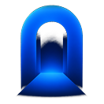

Android
1 passo · pela Google Play
-
Aceite o convite
Toque no link, entre como testador e instale o Unwind direto pela Google Play.
Entrar no beta
As atualizações do beta chegam pela própria Google Play.

UnwindEscolha o seu aparelho e siga os passos. Em poucos minutos o app já está na sua mão.
1 passo · pela Google Play
Toque no link, entre como testador e instale o Unwind direto pela Google Play.
Entrar no betaAs atualizações do beta chegam pela própria Google Play.
2 passos · pelo TestFlight
É o app da Apple pra testar versões antes do lançamento. Gratuito, direto da App Store.
Baixar o TestFlightCom o TestFlight instalado, volte aqui, toque no botão abaixo e depois em Instalar.
Não abra o link de dentro do TestFlight. Se você entrar no TestFlight e tocar no link por lá, ele vai pedir um código de convite que você não tem. Feche o TestFlight e toque no botão daqui: o convite abre direto, sem código.
Entrar no betaAs atualizações do beta chegam pelo TestFlight.